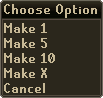

Fletching - The Basics
Introduction
The art of Fletching allows the player to create ranged weapons and ammunition.
It is also a fun and quick way of making money!
As your Fletching skill improves, you will be able to shape a wider variety of items, from a multitude of wood types.
Requirements for Fletching
In order to start as a fletcher, you will need the following items:
- A knife
- Logs of wood
Obtaining a Knife
This is the most important tool of fletching, as you will require a knife in order to shape wood into equipment. Knives can be found in the following places around the world:
- South of the Lumbridge Castle you will find a knife respawn
- In Seers' Village, just south-west from the bank, in the house with a sink
- Bought from various stores, such as Tree Gnome Stronghold food shops
Look out for red dots in the minimap, they indicate the location of items that can be picked up.
Acquiring Logs
To make items such as bows and arrows, you will need some logs and a knife. If you haven't cut wood before, please read the Woodcutting section of the manual. Alternatively, logs can be purchased from other players.
Once you have both of these items in your inventory, use the knife on the logs. Do this by left-clicking on the knife so that it is outlined in white and then left-click on the logs. Your character will begin shaping the logs. In your inventory, in the space the logs were, they will be replaced by a fletched item.
Here are some of the items you can fletch:
| Item | Image |
| Arrows | ![[image]](../../img/main/kbase/weapons/ranged/rune_arrows.gif) |
| Bows | ![[image]](../../img/main/kbase/weapons/ranged/yew_shortbow.gif) |
| Darts | ![[image]](../../img/main/kbase/weapons/ranged/rune_dart.gif) |
| Special Bolts | ![[image]](../../img/main/kbase/weapons/ranged/barbed_bolt.gif) |
Mass Production

Note: You cannot fletch noted items.
When Fletching items such as arrows and bows, a screen similar to the one to the right will be displayed.
 When this screen appears, right-click on the object shown and the option to fletch one, five, ten or X items will be shown. To fletch one item left-click on the 'Make 1' option. To fletch five items left-click on the 'Make 5' option. To fletch ten items, left-click on the 'Make 10' option. To fletch X items left-click on the 'Make X' option and type in the amount you would like to fletch.
Click here to view the Fletching FAQs

More articles in
Fletching
|
|
|
Further Help
Need more help? Come chat with us!
|
|